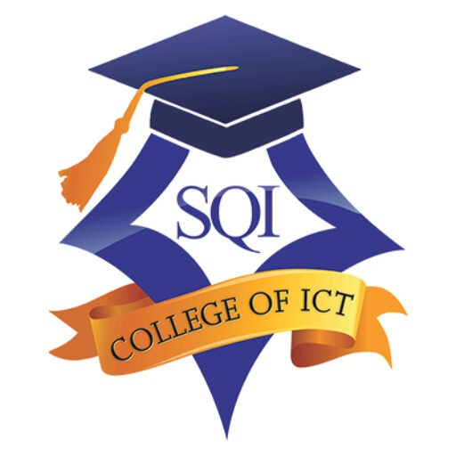
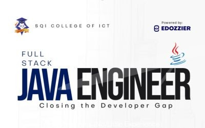

Study to become a global talent
Learn tech skills at your own pace with structured curriculum and expert instructors.


Learn tech skills at your own pace with structured curriculum and expert instructors.
The National Diploma (ND) offered at SQI College of ICT is a 2 year approved academic program of the National Board for Technical Education (NBTE) and approved by the Federal Ministry of Education
Learn MoreThe Professional Certificate Program is 1 year practical training with wide range of edge-cutting IT certification courses offered in SQI College of ICT to people who want to advance their career.
Learn MoreThe Certificate Program is a short-term training, 2 weeks to 6 months with a wide range of edge-cutting IT certification courses offered in SQI College of ICT to people who want to advance their careers.
Learn MoreTake a look at some of our popular courses
View all Courses
Software Engineering is one of the most in-demand jobs across the globe today.
Software Engineers are also known as programmers, developers or coders. They are the ones behind all the apps and software you use today either on your ….
Learn MoreThe eruption of data is transforming indiviuals and businesses. Companies either big or small are now expecting their business decisions to be based on data-led insight.
Data specialists have a tremendous impact on…
Learn MoreThis course is designed to prepare you for success in a modern world full of computers—not only the traditional computers such as desktop and notebook PCs but also computers that you interact with in other places too, like your bank’s ATM or your employer’s computerized cash register.
In this course, you will learn about the technologies that drive our computerized society…
Learn MoreMore than ever before individuals and businesses are relying on digital products and services. From online meeting tools to finance, from e-commerce platforms to healthcare and food apps.
Making an intuitive digital product design is even more import at this time as it…
Learn MoreOur campus is a living centre for innovation and creativity for sustainability. We love showing students our campus and allowing them to see, hear and feel the excitement that comes with being part of the Central community which is an atmosphere that is open-minded, always exciting, and filled with academic excellence.
Our courses are practical, hands-on learning. Practice and apply knowledge with real world projects that contribute largely to your portfolio.
Get to interact with different mentors and draw from their loads of experience.
You can now choose physical class experience or online classroom and learn from anywhere in the world.
You will have access to our fully functional hub for co-working and working on projects, assignments and even begin a start-up.
Be certified by an accredited and globally recognized institution. SQI got its accreditation in Sept 2021 from the NBTE, Nigeria.
Our students have access to alumni who currently work at top tech organizations in the world such as Google, Microsoft, Interswitch etc.
78.5% of our students found secure employment within three months of graduation. Students leave from learning to getting job roles
Students have access to prerecorded videos and resources they can make use of to further solidify their knowledge.
Contact Us
We provide and lead others in quality education, service, industry, and character as well as discipline.

SQI College of ICT, Ogbomoso, on Saturday, May 3, 2025, held its 6th Matriculation Ceremony for the 2024/2025 academic session. The vibrant ceremony, held at the college’s main auditorium, brought together dignitaries from the education sector, traditional rulers,...
Moniepoint recently received significant seed funding, enabling them to recruit a large number of Java developers at unprecedented salaries (₦1.5m – ₦2.5m monthly). While this is great news for those developers, it has left many financial institutions—especially banks—with a shortage of capable Java developers…
A common reason JAMB UTME candidates are denied admission is the wrong combination of subjects. Our goal here is to help you avoid this mistake. Specifically, this post highlights the JAMB subject combinations for JAMB subject combination for 2025 admission into SQI...
Oluwaseyi Odekomaya
4 years ago
I've compared other platforms to this one to be honest and they don't measure up. The platforms that give a comparable level of the quality of skills cost a lot more and don't even offer a guarantee of access to real world project and situations... The ones available at a cheaper price so to say do not give a level of quality even close to it... Some platforms charge a lot more and yet still falter in the delivery of good contents... Another aspect that I noticed in comparison is that instructors at SQI College of ICT are actually interested in ensuring their students understand what they are learning. They take joy in ensuring the students comprehend and are able to apply what is being taught and explain in the simplest ways possible to ensure maximum comprehension.... I'm not sharing this because I have any affiliation with SQI College of ICT, I'm doing so because it's simply the truth. If anyone else tries to make their research, they will find out that it's true too.
Emmanuel Toluwanimi
4 years ago
SQI is one of the things I’m thankful for in my life. I’ve spent six months in SQI and I can say it’s one of the best moments in my life. The staffs are accommodating and very excellent at their job. The tutors don’t just teach, they mentor students. They make coding fun and understandable for learners. I’m able to achieve a lot enrolling with them. I’ve been able to build amazing web projects under their tutelage. ENROLL WITH SQI AND YOU WILL BE PROUD YOU DID.